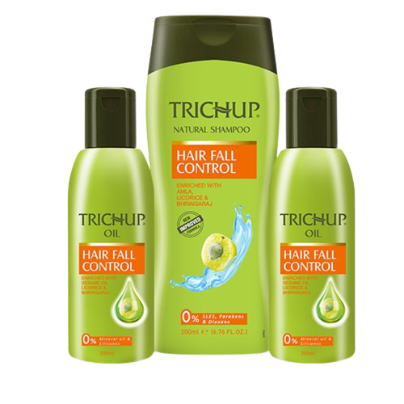

About Us

Vasu Healthcare, with its rich culture and deeply rooted legacy since 1980, was established with one precise aim to serve the society by introducing quality herbal
& ayurvedic products that add value to everyone's life. The journey that we embarked 40 years ago with the help of a rich herbal and ayurvedic knowledge base has led
us to greater heights and milestones of excellence. And we will continue to bring the miraculous byproducts of this vast ayurvedic sea of knowledge combined with cutting-edge
technologies in medical science.
Our sheer dedication towards herbal and ayurvedic research to develop the best products for the people is now growing globally with a presence in over 50 countries. Ayurveda has many hidden gems that serve humanity. We take extreme pride in extracting that knowledge to manufacture highly effective ayurvedic medicines and herbal cosmetic products. Over the years, we researched & developed more than 200 products that help people to cure & improvise their health.
Our sheer dedication towards herbal and ayurvedic research to develop the best products for the people is now growing globally with a presence in over 50 countries. Ayurveda has many hidden gems that serve humanity. We take extreme pride in extracting that knowledge to manufacture highly effective ayurvedic medicines and herbal cosmetic products. Over the years, we researched & developed more than 200 products that help people to cure & improvise their health.
- Simple and easy to use
- get rid of frizzy hair
- Your hair will love our shampoo